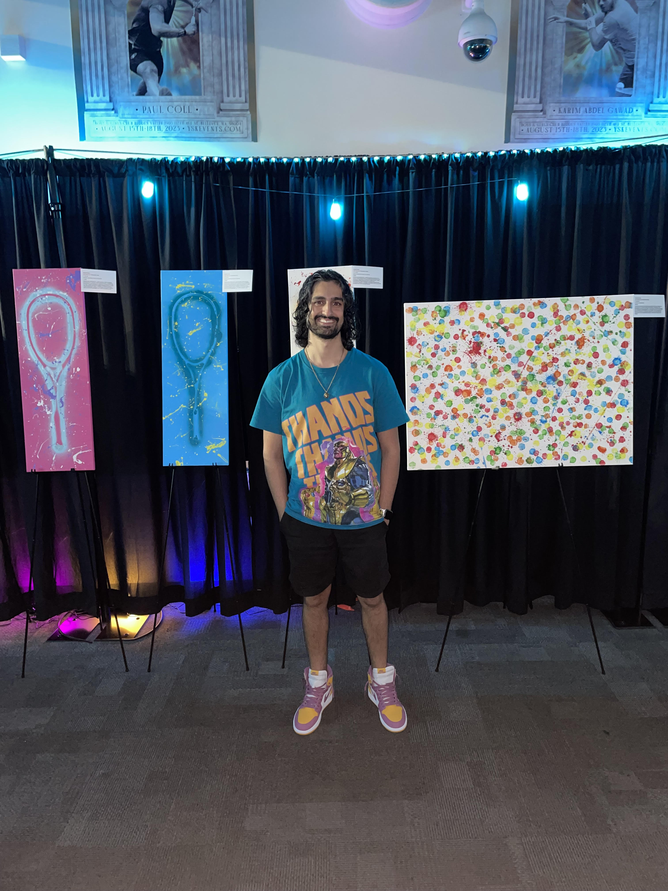

My name is Sharif Khan, and I am an artist based in the greater Seattle area. My work is driven by a passion for imagination, form, and expression, with each piece reflecting a balance of energy, movement, and storytelling. Through my paintings, I strive to evoke emotion and invite viewers into a world of color and creativity.
Art wasn’t always my focus. For much of my life, sports defined who I was. I grew up in a family of squash legends, and I became a top national squash player myself. Basketball was also a major part of my journey, leading me to earn a full-ride scholarship to play at Seattle Pacific University. While at SPU, I completed my bachelor’s in Business Management and later earned my master’s degree in Data Science in Business.
Toward the end of my time in college, I underwent two hip replacements that significantly limited my athletic abilities. What felt like a setback turned into a new beginning: during recovery, I discovered my passion for art. With my competitive drive redirected, I began experimenting with paint, letting my imagination run wild.
Some of my favorite works blend my love for both art and sports — you can explore these in my Collections page, where I highlight unique squash-inspired pieces.
Welcome to my portfolio — feel free to explore my latest works, learn about my process, and connect if you’d like to collaborate or purchase a piece.